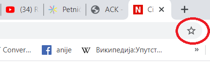
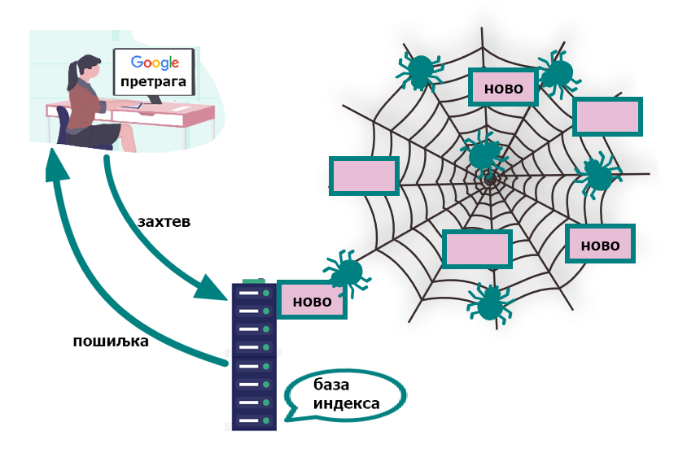

<!DOCTYPE html>
<html xmlns="http://www.w3.org/1999/xhtml" lang="sr-Cyrl"></html>
  <head>
    <meta charset="utf-8" />
    <meta name="viewport" content="width=device-width, initial-scale=1.0" />
    <title>Интернет сервиси &#8212; 1_razred_IKT_DigitalnaPismenost</title>
    <link rel="stylesheet" href="../_static/pygments.css" type="text/css" />
    <link rel="stylesheet" href="../_static/basic.css" type="text/css" />
    <link rel="stylesheet" type="text/css" href="../_static/activecode.css" />
    <link rel="stylesheet" type="text/css" href="../_static/codemirror.css" />
    <link rel="stylesheet" type="text/css" href="../_static/clickable.css" />
    <link rel="stylesheet" type="text/css" href="../_static/pytutor.css" />
    <link rel="stylesheet" type="text/css" href="../_static/modal-basic.css" />
    <link rel="stylesheet" type="text/css" href="../_static/datafile.css" />
    <link rel="stylesheet" type="text/css" href="../_static/dragndrop.css" />
    <link rel="stylesheet" type="text/css" href="../_static/fitb.css" />
    <link rel="stylesheet" type="text/css" href="../_static/matrixeq.css" />
    <link rel="stylesheet" type="text/css" href="../_static/parsons.css" />
    <link rel="stylesheet" type="text/css" href="../_static/lib/prettify.css" />
    <link rel="stylesheet" type="text/css" href="../_static/poll.css" />
    <link rel="stylesheet" type="text/css" href="../_static/showEval.css" />
    <link rel="stylesheet" type="text/css" href="../_static/tabbedstuff.css" />
    <link rel="stylesheet" type="text/css" href="https://stackpath.bootstrapcdn.com/bootstrap/4.2.1/css/bootstrap.min.css" />
    <link rel="stylesheet" type="text/css" href="../_static/video.css" />
    <link rel="stylesheet" type="text/css" href="../_static/webgldemo.css" />
    <link rel="stylesheet" type="text/css" href="../_static/webglinteractive.css" />
    <link rel="stylesheet" type="text/css" href="../_static/karel.css" />
    <link rel="stylesheet" type="text/css" href="../_static/notes.css" />
    <link rel="stylesheet" href="../_static/user-highlights.css" type="text/css" />
    <link rel="stylesheet" href="https://use.fontawesome.com/releases/v5.1.1/css/all.css" type="text/css" />
    <link rel="stylesheet" href="../_static/bootstrap-4.0.0-dist/css/bootstrap.min.css" type="text/css" />
    <link rel="stylesheet" href="../_static/flatly.min.css" type="text/css" />
    <link rel="stylesheet" href="../_static/petlja.css" type="text/css" />
    <script id="documentation_options" data-url_root="../" src="../_static/documentation_options.js"></script>
    <script type="text/javascript" src="../_static/runestonebase.js"></script>
    <script type="text/javascript" src="../_static/jquery.js"></script>
    <script type="text/javascript" src="../_static/underscore.js"></script>
    <script type="text/javascript" src="../_static/doctools.js"></script>
    <script type="text/javascript" src="../_static/language_data.js"></script>
    <script type="text/javascript" src="../_static/jquery.highlight.js"></script>
    <script type="text/javascript" src="../_static/bookfuncs.js"></script>
    <script type="text/javascript" src="../_static/codemirror.js"></script>
    <script type="text/javascript" src="../_static/xml.js"></script>
    <script type="text/javascript" src="../_static/css.js"></script>
    <script type="text/javascript" src="../_static/python.js"></script>
    <script type="text/javascript" src="../_static/htmlmixed.js"></script>
    <script type="text/javascript" src="../_static/javascript.js"></script>
    <script type="text/javascript" src="../_static/jquery_i18n/CLDRPluralRuleParser.js"></script>
    <script type="text/javascript" src="../_static/jquery_i18n/jquery.i18n.js"></script>
    <script type="text/javascript" src="../_static/jquery_i18n/jquery.i18n.messagestore.js"></script>
    <script type="text/javascript" src="../_static/jquery_i18n/jquery.i18n.fallbacks.js"></script>
    <script type="text/javascript" src="../_static/jquery_i18n/jquery.i18n.language.js"></script>
    <script type="text/javascript" src="../_static/jquery_i18n/jquery.i18n.parser.js"></script>
    <script type="text/javascript" src="../_static/jquery_i18n/jquery.i18n.emitter.js"></script>
    <script type="text/javascript" src="../_static/jquery_i18n/jquery.i18n.emitter.bidi.js"></script>
    <script type="text/javascript" src="../_static/activecode-i18n.en.js"></script>
    <script type="text/javascript" src="../_static/skulpt.min.js"></script>
    <script type="text/javascript" src="../_static/skulpt-stdlib.js"></script>
    <script type="text/javascript" src="../_static/activecode.js"></script>
    <script type="text/javascript" src="../_static/clike.js"></script>
    <script type="text/javascript" src="../_static/timed_activecode.js"></script>
    <script type="text/javascript" src="../_static/animationbase.js"></script>
    <script type="text/javascript" src="../_static/mchoice.js"></script>
    <script type="text/javascript" src="../_static/timedmc.js"></script>
    <script type="text/javascript" src="../_static/timed.js"></script>
    <script type="text/javascript" src="../_static/mchoice-i18n.en.js"></script>
    <script type="text/javascript" src="../_static/clickable.js"></script>
    <script type="text/javascript" src="../_static/timedclickable.js"></script>
    <script type="text/javascript" src="../_static/d3.v2.min.js"></script>
    <script type="text/javascript" src="../_static/jquery.ba-bbq.min.js"></script>
    <script type="text/javascript" src="../_static/jquery.jsPlumb-1.3.10-all-min.js"></script>
    <script type="text/javascript" src="../_static/pytutor.js"></script>
    <script type="text/javascript" src="../_static/codelens.js"></script>
    <script type="text/javascript" src="../_static/datafile.js"></script>
    <script type="text/javascript" src="../_static/dragndrop.js"></script>
    <script type="text/javascript" src="../_static/timeddnd.js"></script>
    <script type="text/javascript" src="../_static/dragndrop-i18n.en.js"></script>
    <script type="text/javascript" src="../_static/fitb.js"></script>
    <script type="text/javascript" src="../_static/timedfitb.js"></script>
    <script type="text/javascript" src="../_static/fitb-i18n.en.js"></script>
    <script type="text/javascript" src="../_static/matrixeq.js"></script>
    <script type="text/javascript" src="../_static/lib/prettify.js"></script>
    <script type="text/javascript" src="../_static/lib/hammer.min.js"></script>
    <script type="text/javascript" src="../_static/parsons.js"></script>
    <script type="text/javascript" src="../_static/parsons-i18n.en.js"></script>
    <script type="text/javascript" src="../_static/timedparsons.js"></script>
    <script type="text/javascript" src="../_static/poll.js"></script>
    <script type="text/javascript" src="../_static/reveal.js"></script>
    <script type="text/javascript" src="../_static/shortanswer.js"></script>
    <script type="text/javascript" src="../_static/timed_shortanswer.js"></script>
    <script type="text/javascript" src="../_static/showEval.js"></script>
    <script type="text/javascript" src="../_static/tabbedstuff.js"></script>
    <script type="text/javascript" src="../_static/runestonevideo.js"></script>
    <script type="text/javascript" src="../_static/webglinteractive.js"></script>
    <script type="text/javascript" src="../_static/FileSaver.min.js"></script>
    <script type="text/javascript" src="../_static/Blob.js"></script>
    <script type="text/javascript" src="../_static/karelCorner.js"></script>
    <script type="text/javascript" src="../_static/karelRobot.js"></script>
    <script type="text/javascript" src="../_static/karelWorld.js"></script>
    <script type="text/javascript" src="../_static/karelRobotDrawer.js"></script>
    <script type="text/javascript" src="../_static/karelUI.js"></script>
    <script type="text/javascript" src="../_static/karel.js"></script>
    <script type="text/javascript" src="../_static/karel-i18n.en.js"></script>
    <script type="text/javascript" src="../_static/notes.js"></script>
    <script type="text/javascript" src="../_static/pygamelib-init.js"></script>
    <script type="text/javascript" src="../_static/blockly/blockly_compressed.js"></script>
    <script type="text/javascript" src="../_static/blockly/blocks_compressed.js"></script>
    <script type="text/javascript" src="../_static/blockly/python_compressed.js"></script>
    <script type="text/javascript" src="../_static/blockly/msg-sr.js"></script>
    <script type="text/javascript" src="../_static/blockpy/utilities.js"></script>
    <script type="text/javascript" src="../_static/blockpy/python_errors.js"></script>
    <script type="text/javascript" src="../_static/blockpy/ast_node_visitor.js"></script>
    <script type="text/javascript" src="../_static/blockpy/abstract_interpreter.js"></script>
    <script type="text/javascript" src="../_static/blockpy/pytifa.js"></script>
    <script type="text/javascript" src="../_static/blockpy/abstract_interpreter_definitions.js"></script>
    <script type="text/javascript" src="../_static/blockpy/python_to_blockly.js"></script>
    <script type="text/javascript" src="../_static/blockpy/imported.js"></script>
    <script type="text/javascript" src="../_static/blockpy/blocks/class.js"></script>
    <script type="text/javascript" src="../_static/blockpy/blocks/comment.js"></script>
    <script type="text/javascript" src="../_static/blockpy/blocks/comprehensions.js"></script>
    <script type="text/javascript" src="../_static/blockpy/blocks/dict.js"></script>
    <script type="text/javascript" src="../_static/blockpy/blocks/if.js"></script>
    <script type="text/javascript" src="../_static/blockpy/blocks/io.js"></script>
    <script type="text/javascript" src="../_static/blockpy/blocks/lists.js"></script>
    <script type="text/javascript" src="../_static/blockpy/blocks/sets.js"></script>
    <script type="text/javascript" src="../_static/blockpy/blocks/loops.js"></script>
    <script type="text/javascript" src="../_static/blockpy/blocks/parking.js"></script>
    <script type="text/javascript" src="../_static/blockpy/blocks/tuple.js"></script>
    <script type="text/javascript" src="../_static/blockpy/blocks/turtles.js"></script>
    <script type="text/javascript" src="../_static/blockpy/blocks/text.js"></script>
    <script type="text/javascript" src="../_static/blockpy-modal.js"></script>
    <script type="text/javascript" src="../_static/translations.js"></script>
    <script async="async" type="text/javascript" src="https://cdnjs.cloudflare.com/ajax/libs/mathjax/2.7.5/latest.js?config=TeX-AMS-MML_HTMLorMML"></script>
    <script type="text/javascript" src="../_static/mchoice-i18n.sr-Cyrl.js"></script>
    <script type="text/javascript" src="../_static/mchoice-i18n.sr.js"></script>
    <script type="text/javascript" src="../_static/mchoice-i18n.sr-Latn.js"></script>
    <script type="text/javascript" src="../_static/dragndrop-i18n.sr-Cyrl.js"></script>
    <script type="text/javascript" src="../_static/dragndrop-i18n.sr.js"></script>
    <script type="text/javascript" src="../_static/dragndrop-i18n.sr-Latn.js"></script>
    <script type="text/javascript" src="../_static/fitb-i18n.sr-Cyrl.js"></script>
    <script type="text/javascript" src="../_static/fitb-i18n.sr.js"></script>
    <script type="text/javascript" src="../_static/fitb-i18n.sr-Latn.js"></script>
    <script type="text/javascript" src="../_static/parsons-i18n.sr-Cyrl.js"></script>
    <script type="text/javascript" src="../_static/parsons-i18n.sr.js"></script>
    <script type="text/javascript" src="../_static/parsons-i18n.sr-Latn.js"></script>
    <script type="text/javascript" src="../_static/activecode-i18n.sr-Cyrl.js"></script>
    <script type="text/javascript" src="../_static/activecode-i18n.sr.js"></script>
    <script type="text/javascript" src="../_static/activecode-i18n.sr-Latn.js"></script>
    <script type="text/javascript" src="../_static/jquery-ui-1.10.3.custom.min.js"></script>
    <script type="text/javascript" src="../_static/jquery-fix.js"></script>
    <script type="text/javascript" src="../_static/bootstrap-4.0.0-dist/js/bootstrap.min.js"></script>
    <script type="text/javascript" src="../_static/bootstrap-4.0.0-dist/js/bootstrap.bundle.min.js"></script>
    <script type="text/javascript" src="../_static/bootstrap-sphinx.js"></script>
    <script type="text/javascript" src="../_static/waypoints.min.js"></script>
    <script type="text/javascript" src="../_static/rangy-core.js"></script>
    <script type="text/javascript" src="../_static/rangy-textrange.js"></script>
    <script type="text/javascript" src="../_static/rangy-cssclassapplier.js"></script>
    <script type="text/javascript" src="../_static/user-highlights.js"></script>
    <script type="text/javascript" src="../_static/jquery.idle-timer.js"></script>
    <script type="text/javascript" src="../_static/processing-1.4.1.min.js"></script>
    <script type="text/javascript" src="../_static/jquery.hotkey.js"></script>
    <script type="text/javascript" src="../_static/jquery-migrate-1.2.1.min.js"></script>
    <script type="text/javascript" src="../_static/course-errors.js"></script>
    <script type="text/javascript" src="../_static/petlja.js"></script>
    <link rel="index" title="Index" href="../genindex.html" />
    <link rel="search" title="Search" href="../search.html" />
    <link rel="next" title="Начини и правила комуникације и лепог понашања на интернету" href="komunikacija_na_internetu_lekcija_3.html" />
    <link rel="prev" title="Садржај лекције 1.3" href="uvod_lekcija_3.html" />
<meta charset='utf-8'>
<meta http-equiv='X-UA-Compatible' content='IE=edge,chrome=1'>
<meta content='width=device-width, initial-scale=1.0, maximum-scale=1.0, user-scalable=0' name='viewport' />
<link rel="shortcut icon" href="../_static/favicon.ico" type="image/ico" />
<script type="text/javascript">
  eBookConfig = {};
  eBookConfig.host = 'http://127.0.0.1:8000' ? 'http://127.0.0.1:8000' : 'http://127.0.0.1:8000';
  eBookConfig.app = eBookConfig.host + '/runestone';
  eBookConfig.ajaxURL = eBookConfig.app + '/ajax/';
  eBookConfig.course = '1_razred_IKT_DigitalnaPismenost';
  eBookConfig.logLevel = '0';
  eBookConfig.loginRequired = 'false';
  eBookConfig.build_info = "";
  eBookConfig.isLoggedIn = false;
  eBookConfig.useRunestoneServices = 'false';
  eBookConfig.python3 = 'true';
  eBookConfig.basecourse = 'Primer_kurs';
  eBookConfig.runestone_version = '';
  eBookConfig.imagesDir = '../_images/';
  eBookConfig.staticDir = '../_static/';
  if (typeof (Sk) != "undefined")
    Sk.imgPath = eBookConfig.imagesDir;
</script>

<div id="fb-root"></div>


  </head><body>


<!-- Begin navbar -->

<nav id="navbar" class="navbar navbar-default navbar-fixed-top" role="navigation">

  <a href="https://petlja.org"> </a>
  <a href="https://petlja.org/net.kabinet"> </a>
  <div class="container">

    <div class="navbar-header">
      <button type="button" class="navbar-toggle collapsed" data-toggle="collapse"
        data-target="#bs-example-navbar-collapse-1">
        <span class="sr-only">Toggle navigation</span>
        <span class="icon-bar"></span>
        <span class="icon-bar"></span>
        <span class="icon-bar"></span>
      </button>
    </div>

    <div class="collapse navbar-collapse" id="bs-example-navbar-collapse-1"
      style="margin-left: 25px; text-align: center;">
      <ul class="nav navbar-nav">
        <li class="active"><a
            href="../">1_razred_IKT_DigitalnaPismenost</a>
        </li>
      </ul>
    </div>
  </div>
</nav>

<div style="margin-top: 65px;font-size: 20px; width: 20%; float: left; height: calc(100vh - 115px);">
  
      <div class="sphinxsidebar" role="navigation" aria-label="main navigation">
        <div class="sphinxsidebarwrapper"><ul>
    
    <div class="lecture-div" id=lecture-аУвод>
        <i class="fas fa-caret-right caret-position"></i>
        <i class="fas fa-caret-down caret-position d-none"></i>
        <h5>Увод</h5>
    </div>

    <div class="d-none">
        
        
        <a href=../аУвод/uvodni_tekst.html>
        
        <div class="activity-div" id=activity-uvodni_tekst>
            
            <i class="fas fa-file-alt activity-icon"></i>
            
            Увод у курс
        </div>
    </a>
    

    </diV>
    
    <div class="lecture-div" id=lecture-Тема1>
        <i class="fas fa-caret-right caret-position"></i>
        <i class="fas fa-caret-down caret-position d-none"></i>
        <h5>1. Информационо - комуникационе технологије у савременом друштву</h5>
    </div>

    <div class="d-none">
        
        
        <a href=../Тема1/tekst_tema_1.html>
        
        <div class="activity-div" id=activity-tekst_tema_1>
            
            <i class="fas fa-file-alt activity-icon"></i>
            
            Садржај теме 1
        </div>
    </a>
    

    </diV>
    
    <div class="lecture-div" id=lecture-Лекција1>
        <i class="fas fa-caret-right caret-position"></i>
        <i class="fas fa-caret-down caret-position d-none"></i>
        <h5>1.1 Информационо-комуникационе технологије</h5>
    </div>

    <div class="d-none">
        
        
        <a href=../Лекција1/uvod_lekcija_1.html>
        
        <div class="activity-div" id=activity-uvod_lekcija_1>
            
            <i class="fas fa-file-alt activity-icon"></i>
            
            Садржај лекције 1.1
        </div>
    </a>
    
        
        <a href=../Лекција1/IKT_lekcija_1.html>
        
        <div class="activity-div" id=activity-IKT_lekcija_1>
            
            <i class="fas fa-file-alt activity-icon"></i>
            
            1.1 ИКТ у савременом друштву
        </div>
    </a>
    
        
        <a href=../Лекција1/zkviz_1.html>
        
        <div class="activity-div" id=activity-zkviz_1>
            
            <i class="far fa-question-circle activity-icon"></i>
            
            Квиз 1.1
        </div>
    </a>
    

    </diV>
    
    <div class="lecture-div" id=lecture-Лекција2>
        <i class="fas fa-caret-right caret-position"></i>
        <i class="fas fa-caret-down caret-position d-none"></i>
        <h5>1.2 Рачунарске мреже и интернет</h5>
    </div>

    <div class="d-none">
        
        
        <a href=../Лекција2/uvod_lekcija_2.html>
        
        <div class="activity-div" id=activity-uvod_lekcija_2>
            
            <i class="fas fa-file-alt activity-icon"></i>
            
            Садржај лекције 1.2
        </div>
    </a>
    
        
        <a href=../Лекција2/mreze_lekcija_2.html>
        
        <div class="activity-div" id=activity-mreze_lekcija_2>
            
            <i class="fas fa-file-alt activity-icon"></i>
            
            Рачунарске мреже и интернет
        </div>
    </a>
    
        
        <a href=../Лекција2/zkviz_2.html>
        
        <div class="activity-div" id=activity-zkviz_2>
            
            <i class="far fa-question-circle activity-icon"></i>
            
            Квиз 1.2
        </div>
    </a>
    

    </diV>
    
    <div class="lecture-div" id=lecture-Лекција3>
        <i class="fas fa-caret-right caret-position"></i>
        <i class="fas fa-caret-down caret-position d-none"></i>
        <h5>1.3 Коришћење интернета</h5>
    </div>

    <div class="d-none">
        
        
        <a href=../Лекција3/uvod_lekcija_3.html>
        
        <div class="activity-div" id=activity-uvod_lekcija_3>
            
            <i class="fas fa-file-alt activity-icon"></i>
            
            Садржај лекције 1.3
        </div>
    </a>
    
        
        <a href=../Лекција3/internet_servisi_lekcija_3.html>
        
        <div class="activity-div" id=activity-internet_servisi_lekcija_3>
            
            <i class="fas fa-file-alt activity-icon"></i>
            
            Интернет сервиси
        </div>
    </a>
    
        
        <a href=../Лекција3/komunikacija_na_internetu_lekcija_3.html>
        
        <div class="activity-div" id=activity-komunikacija_na_internetu_lekcija_3>
            
            <i class="fas fa-file-alt activity-icon"></i>
            
            Начини и правила комуникације и лепог понашања на интернету
        </div>
    </a>
    
        
        <a href=../Лекција3/zkviz_3.html>
        
        <div class="activity-div" id=activity-zkviz_3>
            
            <i class="far fa-question-circle activity-icon"></i>
            
            Квиз 1.3
        </div>
    </a>
    

    </diV>
    
    <div class="lecture-div" id=lecture-Лекција4>
        <i class="fas fa-caret-right caret-position"></i>
        <i class="fas fa-caret-down caret-position d-none"></i>
        <h5>1.4 Ауторска права, веродостојност информација, заштита и безбедност</h5>
    </div>

    <div class="d-none">
        
        
        <a href=../Лекција4/uvod_lekcija_4.html>
        
        <div class="activity-div" id=activity-uvod_lekcija_4>
            
            <i class="fas fa-file-alt activity-icon"></i>
            
            Садржај лекције 1.4
        </div>
    </a>
    
        
        <a href=../Лекција4/prava_verodostojnost_lekcija_4.html>
        
        <div class="activity-div" id=activity-prava_verodostojnost_lekcija_4>
            
            <i class="fas fa-file-alt activity-icon"></i>
            
            Ауторска права и веродостојност информација
        </div>
    </a>
    
        
        <a href=../Лекција4/zastita_bezbednost_lekcija_4.html>
        
        <div class="activity-div" id=activity-zastita_bezbednost_lekcija_4>
            
            <i class="fas fa-file-alt activity-icon"></i>
            
            Заштита личних података и приватност
        </div>
    </a>
    
        
        <a href=../Лекција4/uticaji_lekcija_4.html>
        
        <div class="activity-div" id=activity-uticaji_lekcija_4>
            
            <i class="fas fa-file-alt activity-icon"></i>
            
            Утицаји ИКТ на здравље и околину
        </div>
    </a>
    
        
        <a href=../Лекција4/sve_boje_lekcija_4.html>
        
        <div class="activity-div" id=activity-sve_boje_lekcija_4>
            
            <i class="fas fa-file-alt activity-icon"></i>
            
            Све боје интернета
        </div>
    </a>
    
        
        <a href=../Лекција4/zkviz_4.html>
        
        <div class="activity-div" id=activity-zkviz_4>
            
            <i class="far fa-question-circle activity-icon"></i>
            
            Квиз 1.4
        </div>
    </a>
    

    </diV>
    
    <div class="lecture-div" id=lecture-Лекција5>
        <i class="fas fa-caret-right caret-position"></i>
        <i class="fas fa-caret-down caret-position d-none"></i>
        <h5>1.5 Развој ИКТ</h5>
    </div>

    <div class="d-none">
        
        
        <a href=../Лекција5/uvod_lekcija_5.html>
        
        <div class="activity-div" id=activity-uvod_lekcija_5>
            
            <i class="fas fa-file-alt activity-icon"></i>
            
            Садржај лекције 1.5
        </div>
    </a>
    
        
        <a href=../Лекција5/istorijski_razvoj_lekcija_5.html>
        
        <div class="activity-div" id=activity-istorijski_razvoj_lekcija_5>
            
            <i class="fas fa-file-alt activity-icon"></i>
            
            Историјски развој ИКТ
        </div>
    </a>
    
        
        <a href=../Лекција5/generacije_elektronskih_lekcija_5.html>
        
        <div class="activity-div" id=activity-generacije_elektronskih_lekcija_5>
            
            <i class="fas fa-file-alt activity-icon"></i>
            
            Генерације електронских рачунара
        </div>
    </a>
    
        
        <a href=../Лекција5/zkviz_5.html>
        
        <div class="activity-div" id=activity-zkviz_5>
            
            <i class="far fa-question-circle activity-icon"></i>
            
            Квиз 1.5
        </div>
    </a>
    

    </diV>
    
    <div class="lecture-div" id=lecture-Тема2>
        <i class="fas fa-caret-right caret-position"></i>
        <i class="fas fa-caret-down caret-position d-none"></i>
        <h5>2. Рачунарство</h5>
    </div>

    <div class="d-none">
        
        
        <a href=../Тема2/tekst_tema_2.html>
        
        <div class="activity-div" id=activity-tekst_tema_2>
            
            <i class="fas fa-file-alt activity-icon"></i>
            
            Садржај теме 2
        </div>
    </a>
    

    </diV>
    
    <div class="lecture-div" id=lecture-Лекција6>
        <i class="fas fa-caret-right caret-position"></i>
        <i class="fas fa-caret-down caret-position d-none"></i>
        <h5>2.1 Принципи рада рачунара</h5>
    </div>

    <div class="d-none">
        
        
        <a href=../Лекција6/uvod_lekcija_6.html>
        
        <div class="activity-div" id=activity-uvod_lekcija_6>
            
            <i class="fas fa-file-alt activity-icon"></i>
            
            Садржај лекције 2.1
        </div>
    </a>
    
        
        <a href=../Лекција6/kako_rade_računari_lekcija_6.html>
        
        <div class="activity-div" id=activity-kako_rade_računari_lekcija_6>
            
            <i class="fas fa-file-alt activity-icon"></i>
            
            Како раде рачунари
        </div>
    </a>
    
        
        <a href=../Лекција6/predstavljanje_podataka_lekcija_6.html>
        
        <div class="activity-div" id=activity-predstavljanje_podataka_lekcija_6>
            
            <i class="fas fa-file-alt activity-icon"></i>
            
            Представљање података у рачунару
        </div>
    </a>
    
        
        <a href=../Лекција6/zkviz_6.html>
        
        <div class="activity-div" id=activity-zkviz_6>
            
            <i class="far fa-question-circle activity-icon"></i>
            
            Квиз 2.1
        </div>
    </a>
    

    </diV>
    
    <div class="lecture-div" id=lecture-Лекција7>
        <i class="fas fa-caret-right caret-position"></i>
        <i class="fas fa-caret-down caret-position d-none"></i>
        <h5>2.2 Представљање бројева и рачунање са различитим основама</h5>
    </div>

    <div class="d-none">
        
        
        <a href=../Лекција7/uvod_lekcija_7.html>
        
        <div class="activity-div" id=activity-uvod_lekcija_7>
            
            <i class="fas fa-file-alt activity-icon"></i>
            
            Садржај лекције 2.2
        </div>
    </a>
    
        
        <a href=../Лекција7/predstavljanje_racunanje_lekcija_7.html>
        
        <div class="activity-div" id=activity-predstavljanje_racunanje_lekcija_7>
            
            <i class="fas fa-file-alt activity-icon"></i>
            
            Представљање бројева и рачунање са различитим основама
        </div>
    </a>
    
        
        <a href=../Лекција7/zkviz_7.html>
        
        <div class="activity-div" id=activity-zkviz_7>
            
            <i class="far fa-question-circle activity-icon"></i>
            
            Квиз 2.2
        </div>
    </a>
    

    </diV>
    
    <div class="lecture-div" id=lecture-Лекција8>
        <i class="fas fa-caret-right caret-position"></i>
        <i class="fas fa-caret-down caret-position d-none"></i>
        <h5>2.3 Хардверске компоненте рачунарских система</h5>
    </div>

    <div class="d-none">
        
        
        <a href=../Лекција8/uvod_lekcija_8.html>
        
        <div class="activity-div" id=activity-uvod_lekcija_8>
            
            <i class="fas fa-file-alt activity-icon"></i>
            
            Садржај лекције 2.3
        </div>
    </a>
    
        
        <a href=../Лекција8/hardver_lekcija_8.html>
        
        <div class="activity-div" id=activity-hardver_lekcija_8>
            
            <i class="fas fa-file-alt activity-icon"></i>
            
            Хардвер
        </div>
    </a>
    
        
        <a href=../Лекција8/zkviz_8.html>
        
        <div class="activity-div" id=activity-zkviz_8>
            
            <i class="far fa-question-circle activity-icon"></i>
            
            Квиз 2.3
        </div>
    </a>
    

    </diV>
    
    <div class="lecture-div" id=lecture-Лекција9>
        <i class="fas fa-caret-right caret-position"></i>
        <i class="fas fa-caret-down caret-position d-none"></i>
        <h5>2.4 Софтверске компоненте рачунарских система</h5>
    </div>

    <div class="d-none">
        
        
        <a href=../Лекција9/uvod_lekcija_9.html>
        
        <div class="activity-div" id=activity-uvod_lekcija_9>
            
            <i class="fas fa-file-alt activity-icon"></i>
            
            Садржај лекције 2.4
        </div>
    </a>
    
        
        <a href=../Лекција9/softver_lekcija_9.html>
        
        <div class="activity-div" id=activity-softver_lekcija_9>
            
            <i class="fas fa-file-alt activity-icon"></i>
            
            Софтвер
        </div>
    </a>
    
        
        <a href=../Лекција9/zkviz_9.html>
        
        <div class="activity-div" id=activity-zkviz_9>
            
            <i class="far fa-question-circle activity-icon"></i>
            
            Квиз 2.4
        </div>
    </a>
    

    </diV>
    
    <div class="lecture-div" id=lecture-Тема3>
        <i class="fas fa-caret-right caret-position"></i>
        <i class="fas fa-caret-down caret-position d-none"></i>
        <h5>3. Организација података и прилагођавање радног окружења</h5>
    </div>

    <div class="d-none">
        
        
        <a href=../Тема3/tekst_tema_3.html>
        
        <div class="activity-div" id=activity-tekst_tema_3>
            
            <i class="fas fa-file-alt activity-icon"></i>
            
            Садржај теме 3
        </div>
    </a>
    

    </diV>
    
    <div class="lecture-div" id=lecture-Лекција10>
        <i class="fas fa-caret-right caret-position"></i>
        <i class="fas fa-caret-down caret-position d-none"></i>
        <h5>3.1 Графички кориснички интерфејс</h5>
    </div>

    <div class="d-none">
        
        
        <a href=../Лекција10/uvod_lekcija_10.html>
        
        <div class="activity-div" id=activity-uvod_lekcija_10>
            
            <i class="fas fa-file-alt activity-icon"></i>
            
            Садржај лекције 3.1
        </div>
    </a>
    
        
        <a href=../Лекција10/gki_lekcija_10.html>
        
        <div class="activity-div" id=activity-gki_lekcija_10>
            
            <i class="fas fa-file-alt activity-icon"></i>
            
            Графички кориснички интерфејс - основни елементи
        </div>
    </a>
    
        
        <a href=../Лекција10/gki_podešavanja_lekcija_10.html>
        
        <div class="activity-div" id=activity-gki_podešavanja_lekcija_10>
            
            <i class="fas fa-file-alt activity-icon"></i>
            
            Графички кориснички интерфејс - основна подешавања
        </div>
    </a>
    
        
        <a href=../Лекција10/zkviz_10.html>
        
        <div class="activity-div" id=activity-zkviz_10>
            
            <i class="far fa-question-circle activity-icon"></i>
            
            Квиз 3.1
        </div>
    </a>
    

    </diV>
    
    <div class="lecture-div" id=lecture-Лекција11>
        <i class="fas fa-caret-right caret-position"></i>
        <i class="fas fa-caret-down caret-position d-none"></i>
        <h5>3.2 Рад са документима и системом датотека</h5>
    </div>

    <div class="d-none">
        
        
        <a href=../Лекција11/uvod_lekcija_11.html>
        
        <div class="activity-div" id=activity-uvod_lekcija_11>
            
            <i class="fas fa-file-alt activity-icon"></i>
            
            Садржај лекције 3.2
        </div>
    </a>
    
        
        <a href=../Лекција11/dokumenti_lekcija_11.html>
        
        <div class="activity-div" id=activity-dokumenti_lekcija_11>
            
            <i class="fas fa-file-alt activity-icon"></i>
            
            Рад са документима и системом датотека
        </div>
    </a>
    
        
        <a href=../Лекција11/zkviz_11.html>
        
        <div class="activity-div" id=activity-zkviz_11>
            
            <i class="far fa-question-circle activity-icon"></i>
            
            Квиз 3.2
        </div>
    </a>
    

    </diV>
    
    <div class="lecture-div" id=lecture-Лекција12>
        <i class="fas fa-caret-right caret-position"></i>
        <i class="fas fa-caret-down caret-position d-none"></i>
        <h5>3.3 Архивирање, слање, чување, заштита.</h5>
    </div>

    <div class="d-none">
        
        
        <a href=../Лекција12/uvod_lekcija_12.html>
        
        <div class="activity-div" id=activity-uvod_lekcija_12>
            
            <i class="fas fa-file-alt activity-icon"></i>
            
            Садржај лекције 3.3
        </div>
    </a>
    
        
        <a href=../Лекција12/arhiviranje_slanje_lekcija_12.html>
        
        <div class="activity-div" id=activity-arhiviranje_slanje_lekcija_12>
            
            <i class="fas fa-file-alt activity-icon"></i>
            
            Архивирање, слање и чување датотека.
        </div>
    </a>
    
        
        <a href=../Лекција12/dokumenti_oblak_lekcija_12.html>
        
        <div class="activity-div" id=activity-dokumenti_oblak_lekcija_12>
            
            <i class="fas fa-file-alt activity-icon"></i>
            
            Рад са документима и системом датотека „у облаку”
        </div>
    </a>
    
        
        <a href=../Лекција12/zastita_lekcija_12.html>
        
        <div class="activity-div" id=activity-zastita_lekcija_12>
            
            <i class="fas fa-file-alt activity-icon"></i>
            
            Средства и методе заштите рачунара и информација
        </div>
    </a>
    
        
        <a href=../Лекција12/zkviz_12.html>
        
        <div class="activity-div" id=activity-zkviz_12>
            
            <i class="far fa-question-circle activity-icon"></i>
            
            Квиз 3.3
        </div>
    </a>
    

    </diV>
    
    <div class="lecture-div" id=lecture-Тема4>
        <i class="fas fa-caret-right caret-position"></i>
        <i class="fas fa-caret-down caret-position d-none"></i>
        <h5>4. Креирање и уређевање дигиталних докумената</h5>
    </div>

    <div class="d-none">
        
        
        <a href=../Тема4/tekst_tema_4.html>
        
        <div class="activity-div" id=activity-tekst_tema_4>
            
            <i class="fas fa-file-alt activity-icon"></i>
            
            Садржај теме 4
        </div>
    </a>
    

    </diV>
    
    <div class="lecture-div" id=lecture-ЛекцијаW1>
        <i class="fas fa-caret-right caret-position"></i>
        <i class="fas fa-caret-down caret-position d-none"></i>
        <h5>4.1 Креирање, уређивање и форматирање дигиталних текстова</h5>
    </div>

    <div class="d-none">
        
        
        <a href=../ЛекцијаW1/uvod_lekcija_w1.html>
        
        <div class="activity-div" id=activity-uvod_lekcija_w1>
            
            <i class="fas fa-file-alt activity-icon"></i>
            
            Садржај лекције 4.1
        </div>
    </a>
    
        
        <a href=../ЛекцијаW1/tekst_lekcija_w1.html>
        
        <div class="activity-div" id=activity-tekst_lekcija_w1>
            
            <i class="fas fa-file-alt activity-icon"></i>
            
            Креирање, уређивање и форматирање дигиталних текстова
        </div>
    </a>
    
        
        <a href=../ЛекцијаW1/zkviz_w1.html>
        
        <div class="activity-div" id=activity-zkviz_w1>
            
            <i class="fas fa-file-alt activity-icon"></i>
            
            Задаци 4.1
        </div>
    </a>
    

    </diV>
    
    <div class="lecture-div" id=lecture-ЛекцијаW2>
        <i class="fas fa-caret-right caret-position"></i>
        <i class="fas fa-caret-down caret-position d-none"></i>
        <h5>4.2 Форматирање параграфа</h5>
    </div>

    <div class="d-none">
        
        
        <a href=../ЛекцијаW2/uvod_lekcija_w2.html>
        
        <div class="activity-div" id=activity-uvod_lekcija_w2>
            
            <i class="fas fa-file-alt activity-icon"></i>
            
            Садржај лекције 4.2
        </div>
    </a>
    
        
        <a href=../ЛекцијаW2/tekst_lekcija_w2.html>
        
        <div class="activity-div" id=activity-tekst_lekcija_w2>
            
            <i class="fas fa-file-alt activity-icon"></i>
            
            Форматирање параграфа
        </div>
    </a>
    
        
        <a href=../ЛекцијаW2/zkviz_w2.html>
        
        <div class="activity-div" id=activity-zkviz_w2>
            
            <i class="fas fa-file-alt activity-icon"></i>
            
            Задаци 4.2
        </div>
    </a>
    

    </diV>
    
    <div class="lecture-div" id=lecture-ЛекцијаW3>
        <i class="fas fa-caret-right caret-position"></i>
        <i class="fas fa-caret-down caret-position d-none"></i>
        <h5>4.3 Посебни елементи у тексту</h5>
    </div>

    <div class="d-none">
        
        
        <a href=../ЛекцијаW3/uvod_lekcija_w3.html>
        
        <div class="activity-div" id=activity-uvod_lekcija_w3>
            
            <i class="fas fa-file-alt activity-icon"></i>
            
            Садржај лекције 4.3
        </div>
    </a>
    
        
        <a href=../ЛекцијаW3/tekst_lekcija_slike_w3.html>
        
        <div class="activity-div" id=activity-tekst_lekcija_slike_w3>
            
            <i class="fas fa-file-alt activity-icon"></i>
            
            Уметање слика и облика
        </div>
    </a>
    
        
        <a href=../ЛекцијаW3/tekst_lekcija_tabele_w3.html>
        
        <div class="activity-div" id=activity-tekst_lekcija_tabele_w3>
            
            <i class="fas fa-file-alt activity-icon"></i>
            
            Уметање табела
        </div>
    </a>
    
        
        <a href=../ЛекцијаW3/tekst_lekcija_formule_w3.html>
        
        <div class="activity-div" id=activity-tekst_lekcija_formule_w3>
            
            <i class="fas fa-file-alt activity-icon"></i>
            
            Уметање симбола и формула
        </div>
    </a>
    
        
        <a href=../ЛекцијаW3/zkviz_w3.html>
        
        <div class="activity-div" id=activity-zkviz_w3>
            
            <i class="fas fa-file-alt activity-icon"></i>
            
            Задаци 4.3
        </div>
    </a>
    

    </diV>
    
    <div class="lecture-div" id=lecture-ЛекцијаW4>
        <i class="fas fa-caret-right caret-position"></i>
        <i class="fas fa-caret-down caret-position d-none"></i>
        <h5>4.4 Логичка структура текстуалног документа</h5>
    </div>

    <div class="d-none">
        
        
        <a href=../ЛекцијаW4/uvod_lekcija_w4.html>
        
        <div class="activity-div" id=activity-uvod_lekcija_w4>
            
            <i class="fas fa-file-alt activity-icon"></i>
            
            Садржај лекције 4.4
        </div>
    </a>
    
        
        <a href=../ЛекцијаW4/tekst_lekcija_w4.html>
        
        <div class="activity-div" id=activity-tekst_lekcija_w4>
            
            <i class="fas fa-file-alt activity-icon"></i>
            
            Логичка структура текстуалног документа
        </div>
    </a>
    
        
        <a href=../ЛекцијаW4/zkviz_w4.html>
        
        <div class="activity-div" id=activity-zkviz_w4>
            
            <i class="fas fa-file-alt activity-icon"></i>
            
            Задаци 4.4
        </div>
    </a>
    

    </diV>
    
    <div class="lecture-div" id=lecture-ЛекцијаW5>
        <i class="fas fa-caret-right caret-position"></i>
        <i class="fas fa-caret-down caret-position d-none"></i>
        <h5>4.5 Обликовање документа, штампање</h5>
    </div>

    <div class="d-none">
        
        
        <a href=../ЛекцијаW5/uvod_lekcija_w5.html>
        
        <div class="activity-div" id=activity-uvod_lekcija_w5>
            
            <i class="fas fa-file-alt activity-icon"></i>
            
            Садржај лекције 4.5
        </div>
    </a>
    
        
        <a href=../ЛекцијаW5/tekst_lekcija_w5.html>
        
        <div class="activity-div" id=activity-tekst_lekcija_w5>
            
            <i class="fas fa-file-alt activity-icon"></i>
            
            Обликовање документа, штампање
        </div>
    </a>
    
        
        <a href=../ЛекцијаW5/zkviz_w5.html>
        
        <div class="activity-div" id=activity-zkviz_w5>
            
            <i class="fas fa-file-alt activity-icon"></i>
            
            Задаци 4.5
        </div>
    </a>
    

    </diV>
    
    <div class="lecture-div" id=lecture-ЛекцијаW6>
        <i class="fas fa-caret-right caret-position"></i>
        <i class="fas fa-caret-down caret-position d-none"></i>
        <h5>4.6 Рад у дељеном текстуалном документу</h5>
    </div>

    <div class="d-none">
        
        
        <a href=../ЛекцијаW6/uvod_lekcija_w6.html>
        
        <div class="activity-div" id=activity-uvod_lekcija_w6>
            
            <i class="fas fa-file-alt activity-icon"></i>
            
            Садржај лекције 4.6
        </div>
    </a>
    
        
        <a href=../ЛекцијаW6/tekst_lekcija_w6.html>
        
        <div class="activity-div" id=activity-tekst_lekcija_w6>
            
            <i class="fas fa-file-alt activity-icon"></i>
            
            Рад у дељеном текстуалном документу
        </div>
    </a>
    
        
        <a href=../ЛекцијаW6/zkviz_w6.html>
        
        <div class="activity-div" id=activity-zkviz_w6>
            
            <i class="fas fa-file-alt activity-icon"></i>
            
            Задаци 4.6
        </div>
    </a>
    

    </diV>
    
    <div class="lecture-div" id=lecture-ЛекцијаW7>
        <i class="fas fa-caret-right caret-position"></i>
        <i class="fas fa-caret-down caret-position d-none"></i>
        <h5>4.7 Слајд - презентације у дељеном документу</h5>
    </div>

    <div class="d-none">
        
        
        <a href=../ЛекцијаW7/uvod_lekcija_w7.html>
        
        <div class="activity-div" id=activity-uvod_lekcija_w7>
            
            <i class="fas fa-file-alt activity-icon"></i>
            
            Садржај лекције 4.7
        </div>
    </a>
    
        
        <a href=../ЛекцијаW7/tekst_lekcija_w7.html>
        
        <div class="activity-div" id=activity-tekst_lekcija_w7>
            
            <i class="fas fa-file-alt activity-icon"></i>
            
            Слајд - презентације у дељеном документу
        </div>
    </a>
    
        
        <a href=../ЛекцијаW7/zkviz_w7.html>
        
        <div class="activity-div" id=activity-zkviz_w7>
            
            <i class="fas fa-file-alt activity-icon"></i>
            
            Задаци 4.7
        </div>
    </a>
    

    </diV>
    
    <div class="lecture-div" id=lecture-ЛекцијаW8>
        <i class="fas fa-caret-right caret-position"></i>
        <i class="fas fa-caret-down caret-position d-none"></i>
        <h5>4.8 Израда слајд презентације у Пауерпоинту</h5>
    </div>

    <div class="d-none">
        
        
        <a href=../ЛекцијаW8/uvod_lekcija_w8.html>
        
        <div class="activity-div" id=activity-uvod_lekcija_w8>
            
            <i class="fas fa-file-alt activity-icon"></i>
            
            Садржај лекције 4.8
        </div>
    </a>
    
        
        <a href=../ЛекцијаW8/podsećanje_lekcija_w8.html>
        
        <div class="activity-div" id=activity-podsećanje_lekcija_w8>
            
            <i class="fas fa-file-alt activity-icon"></i>
            
            Рад у Пауерпоинту - подсетник
        </div>
    </a>
    
        
        <a href=../ЛекцијаW8/tekst_lekcija_w8.html>
        
        <div class="activity-div" id=activity-tekst_lekcija_w8>
            
            <i class="fas fa-file-alt activity-icon"></i>
            
            Презентације и њихова примена
        </div>
    </a>
    
        
        <a href=../ЛекцијаW8/zkviz_w8.html>
        
        <div class="activity-div" id=activity-zkviz_w8>
            
            <i class="fas fa-file-alt activity-icon"></i>
            
            Задаци 4.8
        </div>
    </a>
    

    </diV>
    
    <div class="lecture-div" id=lecture-ЛекцијаW9>
        <i class="fas fa-caret-right caret-position"></i>
        <i class="fas fa-caret-down caret-position d-none"></i>
        <h5>4.9 Напредне технике израде слајд презентација</h5>
    </div>

    <div class="d-none">
        
        
        <a href=../ЛекцијаW9/uvod_lekcija_w9.html>
        
        <div class="activity-div" id=activity-uvod_lekcija_w9>
            
            <i class="fas fa-file-alt activity-icon"></i>
            
            Садржај лекције 4.9
        </div>
    </a>
    
        
        <a href=../ЛекцијаW9/tekst_lekcija_w9.html>
        
        <div class="activity-div" id=activity-tekst_lekcija_w9>
            
            <i class="fas fa-file-alt activity-icon"></i>
            
            Напредне технике израде слајд презентација
        </div>
    </a>
    
        
        <a href=../ЛекцијаW9/zkviz_w9.html>
        
        <div class="activity-div" id=activity-zkviz_w9>
            
            <i class="fas fa-file-alt activity-icon"></i>
            
            Задаци 4.9
        </div>
    </a>
    

    </diV>
    
    <div class="lecture-div" id=lecture-ЛекцијаW10>
        <i class="fas fa-caret-right caret-position"></i>
        <i class="fas fa-caret-down caret-position d-none"></i>
        <h5>4.10 Уређивање текста применом нотација за обележавање</h5>
    </div>

    <div class="d-none">
        
        
        <a href=../ЛекцијаW10/uvod_lekcija_w10.html>
        
        <div class="activity-div" id=activity-uvod_lekcija_w10>
            
            <i class="fas fa-file-alt activity-icon"></i>
            
            Садржај лекције 4.10
        </div>
    </a>
    
        
        <a href=../ЛекцијаW10/tekst_lekcija_w10.html>
        
        <div class="activity-div" id=activity-tekst_lekcija_w10>
            
            <i class="fas fa-file-alt activity-icon"></i>
            
            Уређивање текста применом нотација за обележавање
        </div>
    </a>
    
        
        <a href=../ЛекцијаW10/html_lekcija_w10.html>
        
        <div class="activity-div" id=activity-html_lekcija_w10>
            
            <i class="fas fa-file-alt activity-icon"></i>
            
            HTML
        </div>
    </a>
    
        
        <a href=../ЛекцијаW10/mark_lekcija_w10.html>
        
        <div class="activity-div" id=activity-mark_lekcija_w10>
            
            <i class="fas fa-file-alt activity-icon"></i>
            
            Markdown
        </div>
    </a>
    
        
        <a href=../ЛекцијаW10/wiki_lekcija_w10.html>
        
        <div class="activity-div" id=activity-wiki_lekcija_w10>
            
            <i class="fas fa-file-alt activity-icon"></i>
            
            Wiki
        </div>
    </a>
    
        
        <a href=../ЛекцијаW10/zkviz_w10.html>
        
        <div class="activity-div" id=activity-zkviz_w10>
            
            <i class="fas fa-file-alt activity-icon"></i>
            
            Задаци 4.10
        </div>
    </a>
    

    </diV>
    
</ul>
        </div>
      </div>

</div>

<div class="container col-md-12" id="continue-reading"></div>
<div class="container" id="main-content" style="float: left;  padding-left: 20px; height: calc(100vh - 115px);">
<div id="errors">

</div>


  
  <div class="section" id="id1">
<h1>Интернет сервиси<a class="headerlink" href="#id1" title="Permalink to this headline">¶</a></h1>

    <div class="course-box course-box-info">
        <div class="course-content">
            <p>
<p>Увек када је уређај повезан на интернет, каже се и да је онлајн (енгл. online) а када је веза прекинута, каже се да је уређај офлајн (енгл. offline). Обратите пажњу, у српском језику ове речи, иако енглеског порекла, пишу се онако како их изговарамо. Неправилно је написати онлине исто колико би било неправилно и да напишемо, на пример, телевисион…</p>

    </p></div></div>
<p>Као што се из претходне лекције може закључити, интернет представља инфраструктуру. Као што у граду имамо инфраструктуру - улице, бандере са кабловима, цеви испод улица, па на њима функционишу различити сервиси: градски саобраћај, комуналне услуге, водовод, снабдевање струјом, тако и на интернету постоје различите услуге - сервиси. У овом моменту поменућемо само два: веб (WWW) и електронску пошту.</p>
<p><strong>Веб, енгл. WWW - World Wide Web</strong>, што би се могло превести као „широм света разапета мрежа” - данас најраспрострањенији сервис, који преставља мрежу садржаја (заправо веб-страница)  на интернету, међусобно повезаних везама - линковима.</p>
<a class="reference internal image-reference" href="../_images/3_world_wide_web.png"></a>
<p><strong>Електронска пошта, имејл (енгл. email)</strong> је сервис путем којег корисници шаљу „писма”, односно пошиљке које се састоје од текста и мултимедијалних прилога. Адресирају се адресама корисника, које смо већ описали када смо говорили о врстама адресирања на интернету.</p>
<p>Примери адреса: <a class="reference external" href="mailto:mika&#46;petljanovic&#37;&#52;&#48;gmail&#46;com">mika<span>&#46;</span>petljanovic<span>&#64;</span>gmail<span>&#46;</span>com</a>, <a class="reference external" href="mailto:mika&#46;petljanovic&#37;&#52;&#48;outlook&#46;com">mika<span>&#46;</span>petljanovic<span>&#64;</span>outlook<span>&#46;</span>com</a>, су адресе једне особе на два различита мејл-сервиса, <a class="reference external" href="mailto:mika&#46;petljanovic&#37;&#52;&#48;sbb&#46;rs">mika<span>&#46;</span>petljanovic<span>&#64;</span>sbb<span>&#46;</span>rs</a> би била адреса код једног интернет-сервис провајдера, а <a class="reference external" href="mailto:mika&#46;petljanovic&#37;&#52;&#48;vigimnazija&#46;edu&#46;rs">mika<span>&#46;</span>petljanovic<span>&#64;</span>vigimnazija<span>&#46;</span>edu<span>&#46;</span>rs</a> би била адреса на домену школе. Ово су четири потпуно различите адресе. У сваком од ових случајева, пошиљка стиже на сервер конкретног мејл-сервиса, а корисник уносећи своје корисничко име и лозинку може да приступи пошти у свом „поштанском сандучету” (енгл. inbox). Такав приступ се још зове „вебмејл”, јер се електронској пошти приступа путем веба (о којем говоримо у следећем пасусу). Постоји могућност да се на рачунар инсталира програм који се синхронизује када је рачунар повезан на интернет  тако да је могуће касније прегледање поште и када је веза прекинута. Ово је погодно ако немамо сталан приступ интернету.</p>
<p>Дакле, за сваку имејл комуникацију кључна су 4 рачунара: рачунар-клијент на којем пошиљаоц саставља мејл, рачунар-сервер на којем се налази мејл сервис који он користи, ту се налази „одлазно сандуче” одакле мејл путује интернетом до мејл-сервера примаоца и тамо у „долазном сандучету” чека да га примаоц преузме на свој рачунар-клијент.</p>
<p>И овде једна језичка напомена: у српском језику, без обзира да ли је текст писан ћирилицом или латиницом, пише се имејл а не емаил. Знак „&#64;” који улази у састав сваке имејл адресе раздваја корисничко име од домена и чита се „ет”, од енглеске речи „at” што значи „при”, „на”. Зове се још и „мајмунче” или „манки” (од енглеског назива тог симбола monkey).</p>
<a class="reference internal image-reference" href="../_images/3_Sending-Email.png"></a>

    <div data-component="reveal" id="hipertekst"   data-showtitle="Шта је хипертекстуални документ?" data-hidetitle="Сакриј прозор">
    
    <div class="course-box course-box-info">
        <div class="course-content">
            <p>
<p>Можда овај израз видиш први пут, али сасвим сигурно да хипертекстуалне документе користиш, чак и проучавајући ове лекције. То је текст у којем се налазе хиперлинкови, линкови или хипервезе, баш <a class="reference external" href="https://sr.wikipedia.org/sr-ec/%D0%A5%D0%B8%D0%BF%D0%B5%D1%80%D0%B2%D0%B5%D0%B7%D0%B0">овако</a>.  -то су речи (обично обојене плаво и подвучене, али могу да изгледају и другачије) и текстови који, када се на њих кликне мишем, воде на неку другу веб страницу или други део исте странице.</p>

    </p></div></div>

    </div>
    <div class="line-block">
<div class="line"><br /></div>
</div>
<p>Хајде сада да детаљније упознамо два већ поменута сервиса која сигурно користиш, али вероватно не знаш све могућности, а можда нешто од тога и не користиш на сасвим исправан начин.</p>
<div class="line-block">
<div class="line"><br /></div>
</div>
<div class="section" id="id3">
<h2>Прегледање веба<a class="headerlink" href="#id3" title="Permalink to this headline">¶</a></h2>
<p>Веб је сервис путем којег ти управо сада проучаваш овај курс. За приступ веб садржајима и њихово прегледање потребно је да покренеш програм „веб прегледач” (веб браузер, енгл. web browser). Најчешће коришћени веб-прегледачи су:
Гугл хром (Google Chrome), Мајкрософт еџ (Microsoft Edge), Мозила фајерфокс (Mozzila Firefox),  Опера (Opera) и Сафари (Safari).
Веб садржаји су адресирани помоћу УРЛ адресе (већ смо описали шта је то, подсети се ако се не сећаш лекције са претходног часа). Садржај веб странице може да буде текст, хиперлинк, слика, видео, звук.</p>
<div class="line-block">
<div class="line"><br /></div>
</div>
<a class="reference internal image-reference" href="../_images/3_veb_stranica.png"></a>
<p>Слика: Прегледање веб странице</p>
<div class="line-block">
<div class="line"><br /></div>
</div>
<p>На страницама постоје хиперлинкови, као што смо већ напоменули, то су места која воде до других веб-страница.</p>
<p>Кликом на хиперлинк (често се каже и скраћено, линк) отвара се страница ка којој он води. У зависности од тога како је креирана изворна страница, она друга ће се отворити уместо ње у истој картици истог прозора или у другој картици или прозору.  Десним кликом на линк отвара се мени који нам нуди додатне могућности:</p>
<ul class="simple">
<li><p>отворити линк у новој картици,</p></li>
<li><p>отворити линк у другом прозору,</p></li>
<li><p>отворити линк у прозору без архивирања (за безбедно коришћење на јавним или туђим рачунарима),</p></li>
<li><p>у случају да је исти корисник пријављен на још неком уређају, појавиће се и опција за слање линка на други уређај</p></li>
<li><p>чување странице на свом рачунару,</p></li>
<li><p>копирање адресе ка којој води линк,</p></li>
<li><p>преглед изворног HTML кода.</p></li>
</ul>
<div class="line-block">
<div class="line"><br /></div>
</div>
<a class="reference internal image-reference" href="../_images/3_desni_klik.png"></a>
<p>Слика: Мени који се добија десним кликом на хиперлинк</p>
<div class="line-block">
<div class="line"><br /></div>
</div>
<p>Кликом на хиперлинк (често се каже и скраћено, линк) отвара се страница ка којој он води. У зависности од тога како је креирана изворна страница, она друга ће се отворити уместо ње у истој картици истог прозора или у другој картици или прозору.  Десним кликом на линк отвара се мени који нам нуди додатне могућности:</p>
<ul class="simple">
<li><p>отворити слику у новој картици,</p></li>
<li><p>чување слике на рачунару,</p></li>
<li><p>копирање слике у „клипборд” (да би се „налепила” унутар неког документа),</p></li>
<li><p>копирање адресе слике,</p></li>
<li><p>претраживање веба према слици,</p></li>
<li><p>блокирање (уколико је инсталиран блокер непожељних садржаја),</p></li>
<li><p>преглед изворног HTML кода.</p></li>
</ul>
<div class="line-block">
<div class="line"><br /></div>
</div>
<a class="reference internal image-reference" href="../_images/3_desni_klik_na_sliku.png"></a>
<p>Слика: Мени који се добија десним кликом на слику</p>
<div class="line-block">
<div class="line"><br /></div>
</div>
</div>
<div class="section" id="id4">
<h2>Претраживање веба<a class="headerlink" href="#id4" title="Permalink to this headline">¶</a></h2>
<p>Врло често људи не знају <strong>разлику између прегледача и претраживача</strong>. Обрати пажњу на то! Да поновимо још једном, прегледач је програм на твом рачунару помоћу којег прегледаш веб-садржаје на одређеној адреси. Претраживач је програм на неком серверу који ти помаже да пронађеш веб-странице чије адресе не знаш.
Када отвориш, на пример Гугл-претраживач у неком прегледачу то изгледа овако:</p>
<a class="reference internal image-reference" href="../_images/3_adresa_pretraga.png"></a>
<p>Слика: поља за адресу и за претрагу</p>
<div class="line-block">
<div class="line"><br /></div>
</div>
<p>Ако знаш тачну адресу сајта уносиш је у поље на врху прозора. Ако тражиш сајтове везане за одређени појам, онда то уносиш у поље за претрагу које се налази на средини прозора.</p>

    <div class="course-box course-box-special">
        <div class="course-content">
            <h4 class="carbox-title">
                
            </h4>
            <p>
<p>Није свеједно да ли појам или адресу унесеш у једно или друго поље. Испробај са неколико појмова или адреса веб-сајтова па покушај да откријеш разлику.</p>

    </p></div></div>
<p>Погледај видео у којем је детаљно објашњен поступак претраживања интернета:</p>

    <div  id="Wry89XdTjuI" class="ytvideo"  style="text-align: center; margin: 15px; cursor:pointer;">
        <div style="background-image: url('https://img.youtube.com/vi/Wry89XdTjuI/mqdefault.jpg'); background-repeat: no-repeat;background-position: center; height: 210px; width: 310px; margin: 0 auto; border: 1px solid #20c997">
             
        </div>
      

        </div>
    <div id="modal-Wry89XdTjuI" class="ytvideoclose" style="display: none; position: fixed; top: 0; left: 0; width: 100vw; height: 100vh; background-color: rgba(128, 182, 128, 0.3); z-index: 10000;">
        <div style="background-color: white; position: fixed; top: 4vh; left: 5vw; width:  90vw; height:  90vh; z-index: 100;" id="YTmodal-Wry89XdTjuI">
        </div>
    </div>
    
    
    <div class="line-block">
<div class="line"><br /></div>
</div>
</div>
<div class="section" id="id5">
<h2>Напредна претрага<a class="headerlink" href="#id5" title="Permalink to this headline">¶</a></h2>
<p>Ако обичном претрагом не успеваш да пронађеш тражене информације, већ добијаш мношто резултата који приказују сајтове о појмовима истог назива али другачијег значења или добијаш нерелевантне сајтове, употреби напредну претрагу:</p>

    <div  id="GuNYY5r8nJc" class="ytvideo"  style="text-align: center; margin: 15px; cursor:pointer;">
        <div style="background-image: url('https://img.youtube.com/vi/GuNYY5r8nJc/mqdefault.jpg'); background-repeat: no-repeat;background-position: center; height: 210px; width: 310px; margin: 0 auto; border: 1px solid #20c997">
             
        </div>
      

        </div>
    <div id="modal-GuNYY5r8nJc" class="ytvideoclose" style="display: none; position: fixed; top: 0; left: 0; width: 100vw; height: 100vh; background-color: rgba(128, 182, 128, 0.3); z-index: 10000;">
        <div style="background-color: white; position: fixed; top: 4vh; left: 5vw; width:  90vw; height:  90vh; z-index: 100;" id="YTmodal-GuNYY5r8nJc">
        </div>
    </div>
    
    
    <div class="line-block">
<div class="line"><br /></div>
</div>
</div>
<div class="section" id="id6">
<h2>Преузимање садржаја са веба<a class="headerlink" href="#id6" title="Permalink to this headline">¶</a></h2>
<p>Претрага и прегледање веба врло често се завршава тако што пронађени садржај желимо да сачувамо да би нам био „при руци” кад нам затреба. Можеш само да ископираш део текста или слику у постојећи документ на твом рачунару или да преузмеш целу веб страницу. Осим тога, на вебу често постоје датотеке (фајлови) који су постављени да би се преузели комплетно. Кликом на линк за преузимање (енгл. download) документ ће бити преузет. Обрати пажњу при преузимању да ли је у питању безбедан извор, преузимање са непоузданих сајтова неретко се заврши тиме што се преузме неки малициозни софтвер који вам може направити штету (о малициозном софтверу и заштити биће речи касније).</p>
<p>Погледај најпре видео о томе како да пронађеш документ који желиш да преузмеш. У видеу се говори о тражењу и прузимању документа „пе-де-еф” (.PDF). Најчешће се текстови за преузимање постављају баш у овом формату.</p>

    <div  id="3SN9lXx8qqI" class="ytvideo"  style="text-align: center; margin: 15px; cursor:pointer;">
        <div style="background-image: url('https://img.youtube.com/vi/3SN9lXx8qqI/mqdefault.jpg'); background-repeat: no-repeat;background-position: center; height: 210px; width: 310px; margin: 0 auto; border: 1px solid #20c997">
             
        </div>
      

        </div>
    <div id="modal-3SN9lXx8qqI" class="ytvideoclose" style="display: none; position: fixed; top: 0; left: 0; width: 100vw; height: 100vh; background-color: rgba(128, 182, 128, 0.3); z-index: 10000;">
        <div style="background-color: white; position: fixed; top: 4vh; left: 5vw; width:  90vw; height:  90vh; z-index: 100;" id="YTmodal-3SN9lXx8qqI">
        </div>
    </div>
    
    
    <p>Сада погледај виео у којем је објашњено како се преузимају слике са веба:</p>

    <div  id="PlmHt8fBL-g" class="ytvideo"  style="text-align: center; margin: 15px; cursor:pointer;">
        <div style="background-image: url('https://img.youtube.com/vi/PlmHt8fBL-g/mqdefault.jpg'); background-repeat: no-repeat;background-position: center; height: 210px; width: 310px; margin: 0 auto; border: 1px solid #20c997">
             
        </div>
      

        </div>
    <div id="modal-PlmHt8fBL-g" class="ytvideoclose" style="display: none; position: fixed; top: 0; left: 0; width: 100vw; height: 100vh; background-color: rgba(128, 182, 128, 0.3); z-index: 10000;">
        <div style="background-color: white; position: fixed; top: 4vh; left: 5vw; width:  90vw; height:  90vh; z-index: 100;" id="YTmodal-PlmHt8fBL-g">
        </div>
    </div>
    
    
    <p>Некада се преузимање докумената врши тако што само кликнеш на линк или на сличицу која је означена као место за преузимање (понаекад на њој пише „Преузми” или „Download”)  или је само нацртана стрелица вертикално на доле што представља преузимање са веба на локални рачунар. И при оваквом преузимању важи све оно што је речено у претходним видео-прилозима о релевантности извора и давања сагласности уколико се прозор са таквим дијалогом отвори пре преузимања. Опрезност је неопходна јер се управо на овај начин, са непроверених сајтова може преузети софтвер који може да нам нанесе штету - да се на наш рачунар пренесе злонамеран софтвер о чему ће бити више речи касније.
За вежбу, уради следећи задатак.</p>

    <div class="course-box course-box-special">
        <div class="course-content">
            <h4 class="carbox-title">
                
            </h4>
            <p>
<p>Преузми са ових страница „Петничке онлајн ресурсе” и дело „Доротеј”</p>
<p><a class="reference external" href="http://petnica.rs/petnicki-online-resursi/">http://petnica.rs/petnicki-online-resursi/</a></p>
<p><a class="reference external" href="http://www.antologijasrpskeknjizevnosti.rs/ASK_SR_AzbucnikDela.aspx">http://www.antologijasrpskeknjizevnosti.rs/ASK_SR_AzbucnikDela.aspx</a></p>

    </p></div></div>
<p>Уместо преузимања, можеш само да обележиш линк (уз ризик да власник тог садржаја евентуално промени садржај странице). То може да се уради на два начина:</p>
<ul class="simple">
<li><p>обележавањем у прегледачу кликом на звездицу поред адресе сајта</p></li>
<li><p>помоћу посебних сајтова који служе за памћење линкова, па чак и формирање белешки - као кад читаш папирну књигу па убациш папирић између два листа и напишеш белешку на њему. Такве сајтове ћеш лако пронаћи ако у претрагу укуцаш „маркери”, „букмаркери”, „анотације” (углавном на енглеском: marker, bookmarker, anotation) и наравно формулишеш претрагу тако да избегнеш сајтове који продају папирне стикере или украсне букмаркере, таман да провежбаш претрагу!</p></li>
</ul>
<a class="reference internal image-reference" href="../_images/3_zvezdica.png"></a>
<div class="line-block">
<div class="line"><br /></div>
</div>
</div>
<div class="section" id="id7">
<h2>Претрага по сликама<a class="headerlink" href="#id7" title="Permalink to this headline">¶</a></h2>
<p>Осим појма који укуцамо у поље за претрагу, можемо да вршимо претрагу и за задату слику. Видели сте неки леп пејзаж а не знате где се налази, прочитали сте неку вест са сликом која вам делује невероватно па желите да проверите да ли се та слика појављивала и у другом контексту или имате неки трећи разлог због којег желите да пронађете на интернету информације о нечему што имате на слици, изаберите претрагу по слици и поставите слику са свог рачунара или путем линка ако је слика већ на интернету.
Испробајте ову могућност да видите какве све резултате можете да добијете!</p>

    <div  id="7BTcv0SHZz4" class="ytvideo"  style="text-align: center; margin: 15px; cursor:pointer;">
        <div style="background-image: url('https://img.youtube.com/vi/7BTcv0SHZz4/mqdefault.jpg'); background-repeat: no-repeat;background-position: center; height: 210px; width: 310px; margin: 0 auto; border: 1px solid #20c997">
             
        </div>
      

        </div>
    <div id="modal-7BTcv0SHZz4" class="ytvideoclose" style="display: none; position: fixed; top: 0; left: 0; width: 100vw; height: 100vh; background-color: rgba(128, 182, 128, 0.3); z-index: 10000;">
        <div style="background-color: white; position: fixed; top: 4vh; left: 5vw; width:  90vw; height:  90vh; z-index: 100;" id="YTmodal-7BTcv0SHZz4">
        </div>
    </div>
    
    
    <div class="line-block">
<div class="line"><br /></div>
</div>
</div>
<div class="section" id="id8">
<h2>Како раде претраживачи?<a class="headerlink" href="#id8" title="Permalink to this headline">¶</a></h2>
<p>Кад укуцаш у претраживач неки појам, он не претражује у том моменту све странице на вебу да би проверио где се тај појам појављује. Таква претрага би трајала недељама. Претраживачи на својим серверима имају програме који се називају „пауци” (енгл. spider, crawler) који стално претражују веб. Када наиђу на неки нов сајт, формирају „индекс” - који садржи кључне речи о том сајту (нешто налик картици одређене књиге у библиотечком каталогу, какви се још могу пронаћи у по некој старој библиотеци), а ако су сајт већ раније посетили онда ажурирају његов индекс уколико је било промена од претходне посете. Сви индекси се чувају у бази. Кад корисник укуца неки појам за претрагу, претраживач из те базе приказује индексе по релевантности. Који је сајт релевантнији за који појам биће одређено у зависности од алгоритма конкретног претраживача.</p>
<a class="reference internal image-reference" href="../_images/3_pretraga_mreze.png"></a>
<p>Када претражујеш интернет, колико понуђених линкова погледаш док не нађеш жељени садржај или одустанеш од прегледања и „профиниш” претрагу и поново гледаш најбоље позициониране сајтове? Вероватно погледаш највише првих десетак или петнаест понуђених линкова. Не само ти, већина људи ради претраге на сличан начин. Управо зато се креатори веб-садржаја често довијају на разне начине како да учине да њихов сајт буде „на врху” претраге, а програмери претраживача често модификују те алгоритме како би претрага била објективна. Овде није лоше да упознаш још два важна појма:</p>
<ul class="simple">
<li><p><strong>„Сео” оптимизацијa</strong>  (енгл. <strong>SEO</strong>, Search engine optimization) се односи на активности којима се унапређује веб-дизајн и кôд веб-сајта, али и изграђује добра „репутација” сајта постављањем квалитетних и оригиналних садржаја.</p></li>
<li><p><strong>Ранг веб страница, page rank</strong>  је релевантност веб странице, односно вредност додељена веб страници као мера њене популарности или важности, која се користи за одређивање редоследа којим ће бити приказана у резултатима претраживача. У овом рангирању битну улогу игра укупан број страница (широм веба) које садрже линк ка тој страници.</p></li>
</ul>
<p>Код претраге довољно је да укуцамо једну или пар кључних речи, а можемо да користимо и алате за напредну претрагу којом можемо да искључимо појављивање неких речи, да вршимо претрагу према правима коришћења (лиценци, биће о томе касније речи), језику и слично. При претрагама бољи резултати се добијају ако се укуца пар кључних речи него ако се формулише читава реченица са превише детаља.</p>

    <div class="course-box course-box-special">
        <div class="course-content">
            <h4 class="carbox-title">
                
            </h4>
            <p>
<p>Задатак 1</p>
<p>Желитш да сазнаш нешто о животињи „јагуар”. Међутим, при претрази се појављују и сајтови на разним језицима (јер се јагуар исто пише у многим јазицима) а појављују се и сајтови о аутомобилима марке „Јагуар”. Како ћеш подесити претрагу?</p>
<p>Задатак 2</p>
<p>Потребне су ти информације и формуле за геометријско тело „елипсоид” које ти је познато из географије. Међутим кад укуцаш тај појам, већина резултата се односи на чињеницу да наша планета има облик елипсоида, а тебе занима „математичка страна приче”. При томе, владаш добро и енглеским и још једним страним језиком. Како ћеш подесити претрагу?</p>

    </p></div></div>
<div class="line-block">
<div class="line"><br /></div>
</div>
</div>
<div class="section" id="id9">
<h2>Услуге, платформе и сервиси на вебу<a class="headerlink" href="#id9" title="Permalink to this headline">¶</a></h2>
<p>Већ смо навели да је „веб” интернет сервис. Када кажемо „веб” обично најпре помислимо на веб-сајтове. Међутим, осим посете сајтовима, читања текстова и гледања слика, како је у својим почецима изгледао веб, данас овај сервис пружа много разноврсније услуге. Нека веб-места чак зовем „платформа” јер обједињује различите врсте услуга или је пак у питању систем који пружа много више од „обичног” веб-сајта. Поменућемо само неке за које верујемо да су ти познати:</p>
<ul class="simple">
<li><p>Гугл-мапа  <a class="reference external" href="http://maps.google.com/">maps.google.com</a> -  мапа терена и путева на целој планети (мада није у свим земљама исти „ниво детаља” који се може видети, провери!)</p></li>
<li><p>Јутјуб  <a class="reference external" href="https://www.youtube.com/">youtube.com</a> - платформа за отпремање и прегледање видео материјала.</p></li>
<li><p>Електронска трговина, онлајн продавнице - мноштво сајтова на којима је могуће купити и електронски платити робу.</p></li>
<li><p>Електронско банкарство - данас свака банка има могућност да клијенти онлајн виде стање на рачуну и врше плаћање путем интернета.</p></li>
<li><p>Друштвене мреже: <a class="reference external" href="https://www.facebook.com/">facebook.com</a>,  <a class="reference external" href="https://www.instagram.com/">instagram.com</a>, <a class="reference external" href="https://twitter.com/">twitter.com</a> и многе друге - сервиси путем којих људи остварују контакте и размењују слике, поруке… Сервиси за својеврсно „дружење” преко интернета.</p></li>
<li><p>Платформе за учење на даљину путем интернета (енгл. e-learning) - овај net.kabinet, сајтови засновани на различитом софтверу и сервисима Google Classroom, Moodle…</p></li>
<li><p>Онлајн енциклопедије и библиотеке.</p></li>
</ul>
<p>И многи други, подсећања ради погледај у првој лекцији списак области развоја информационог друштва у Србији - то је управо списак веб-сервиса који се развијају код нас.</p>
<p>Задатак:</p>

        <div class="course-box course-box-problem course-content" style="max-width: none;">
        <pre data-component="parsons" id="inter3"      >
        <span data-question> Q-17: Поређај у правилном редоследу</span>"паук" посећује сајт
формира се индекс сајта
захтев за претрагу
индекс се шаље до клијента
        </pre>
        </div>
    <div class="line-block">
<div class="line"><br /></div>
</div>
</div>
</div>


</div>

<div style="position: relative;">
  
  <div class="col-md-12 lecture-switcher">
    <div class="petljadoc-resources">
            <span class="pull-left">&copy; 2019 Petlja (Created using  <a href="https://pypi.org/project/Sphinx/">Swinx</a>, <a href="http://runestoneinteractive.org/">RunestoneComponents</a> and <a href="https://github.com/Petlja/PetljaDoc">PetljaDoc</a>)</span>
    </div>
<ul class="pager">
    <a href="uvod_lekcija_3.html" id="prevLectureLink"><div id="prevLecture" class="lecture-toggler-arrows"><i class="fas fa-arrow-left fa"></i></div></a>
    
       <a href="#" id="nextLectureLink"><div id="nextLecture" class="lecture-toggler-arrows lecture-toggler-arrows-next"> <i class="fas fa-arrow-right fa"></i></div></a>
</ul>

<!-- <ul class="pager"> -->
    <!-- -->
        <!-- <li id="relations-prev" title='Претходно поглавље - Садржај лекције 1.3' data-toggle="tooltip"><a href="uvod_lekcija_3.html">Претходно поглавље</a></li> -->
    <!--  -->
    <!-- -->
        <!-- <li id="relations-next" title='Следеће поглавље - Начини и правила комуникације и лепог понашања на интернету' data-toggle="tooltip"><a href="komunikacija_na_internetu_lekcija_3.html">Следеће поглавље</a></li> -->
    <!-- -->
<!-- </ul> -->

<script type="text/javascript">

  $('#relations-prev').tooltip({'placement':'right', 'selector': '', 'delay': { show: 100, hide: 50}});
  $('#relations-next').tooltip({'placement':'left', 'selector': '', 'delay': { show: 100, hide: 50}});

</script>
</div>
  
</div>


<script type="text/javascript">
  var _gaq = _gaq || [];
  _gaq.push(['_setAccount', 'UA-32029811-1']);
  _gaq.push(['_trackPageview']);

  (function () {
    var ga = document.createElement('script'); ga.type = 'text/javascript'; ga.async = true;
    ga.src = ('https:' == document.location.protocol ? 'https://ssl' : 'http://www') + '.google-analytics.com/ga.js';
    var s = document.getElementsByTagName('script')[0]; s.parentNode.insertBefore(ga, s);
  })();
</script>


  </body>
</html>